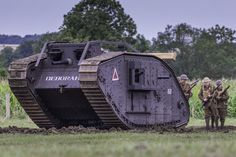

Mark I — это первый в мире танк, разработанный и использованный в бою. Он был создан в Великобритании во время Первой мировой войны. Прототипы были разработаны в 1916 году как ответ на затяжные окопные войны, чтобы преодолеть препятствия и защитить солдат на поле боя.
Ключевые факты:

Первый бой: Mark I впервые применялся в бою 15 сентября 1916 года на Сомме.
Типы: Существовало две основные версии — "мужские" (с пушками) и "женские" (с пулеметами).
Двигатель: Оснащен двигателем мощностью 105 л.с., скорость составляла около 6 км/ч.
Бронирование: Толщина брони составляла от 6 до 12 мм.
Количество: Всего было построено около 1500 экземпляров Mark I.
Долговечность: Благодаря своей конструкции, Mark I прослужил на поле боя до 1918 года.